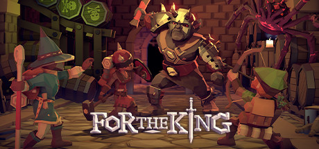

Deep Rock Galactic es un shooter cooperativo de ciencia ficción en primera persona con enanos espaciales de armas tomar, entornos totalmente destruibles,
cuevas generadas procedimentalmente y hordas interminables de monstruos alienígenas.

For The King es un juego de rol estratégico que combina elementos de juegos de mesa y roguelike en una desafiante aventura a través de diversos reinos.
Inicia un viaje en solitario o colabora con otros jugadores en línea o en partidas locales.
 Counter-Strike: Global Offensive (CS:GO) amplía el juego de acción por equipos del que fue pionero cuando salió hace más de 20 años.
CS:GO incluye nuevos mapas, personajes, armas y modos de juego, y ofrece versiones actualizadas del contenido clásico de Counter-Strike (de_dust2, etc.).
Counter-Strike: Global Offensive (CS:GO) amplía el juego de acción por equipos del que fue pionero cuando salió hace más de 20 años.
CS:GO incluye nuevos mapas, personajes, armas y modos de juego, y ofrece versiones actualizadas del contenido clásico de Counter-Strike (de_dust2, etc.).
War Thunder es un juego de combate MMO gratuito de vehículos militares usados en la Segunda Guerra Mundial y la guerra de Corea.
Lucha en grandes batallas de tierra, mar y aire con jugadores internacionales en un entorno en continuo desarrollo.
 Cada día, millones de jugadores de todo el mundo entran en batalla como uno de los más de cien héroes de Dota. Y no importa si es su décima hora de juego o la milésima, siempre hay algo nuevo que descubrir.
Cada día, millones de jugadores de todo el mundo entran en batalla como uno de los más de cien héroes de Dota. Y no importa si es su décima hora de juego o la milésima, siempre hay algo nuevo que descubrir.
 Apex Legends es el galardonado juego gratuito de acción en primera persona de Respawn Entertainment. Domina un elenco creciente de leyendas con potentes habilidades.
Juego estratégico basado en pelotones y jugabilidad innovadora en la nueva evolución del Battle Royale
Apex Legends es el galardonado juego gratuito de acción en primera persona de Respawn Entertainment. Domina un elenco creciente de leyendas con potentes habilidades.
Juego estratégico basado en pelotones y jugabilidad innovadora en la nueva evolución del Battle Royale